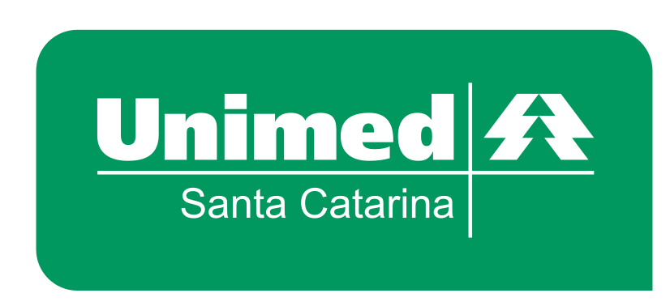
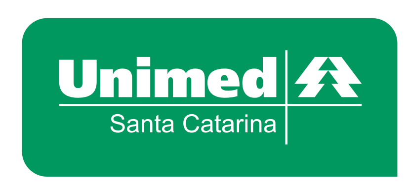
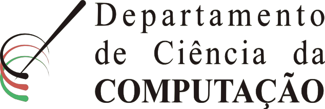
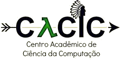
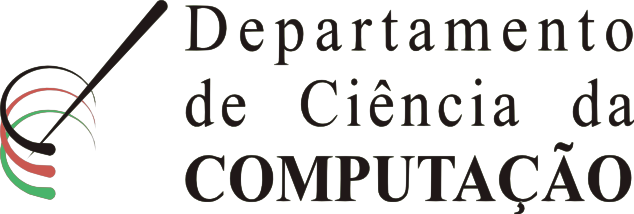
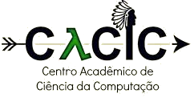
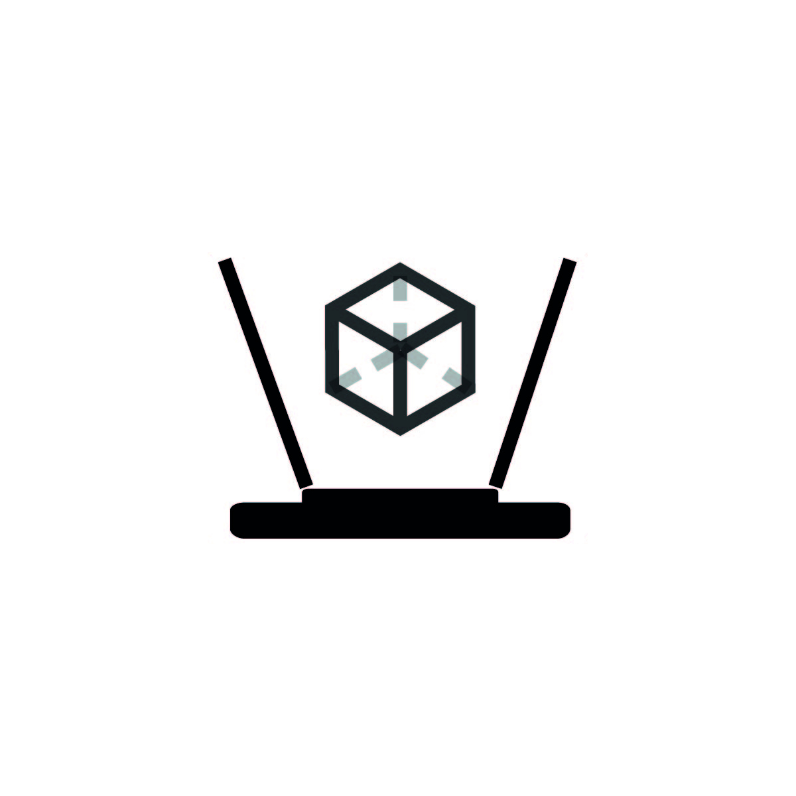
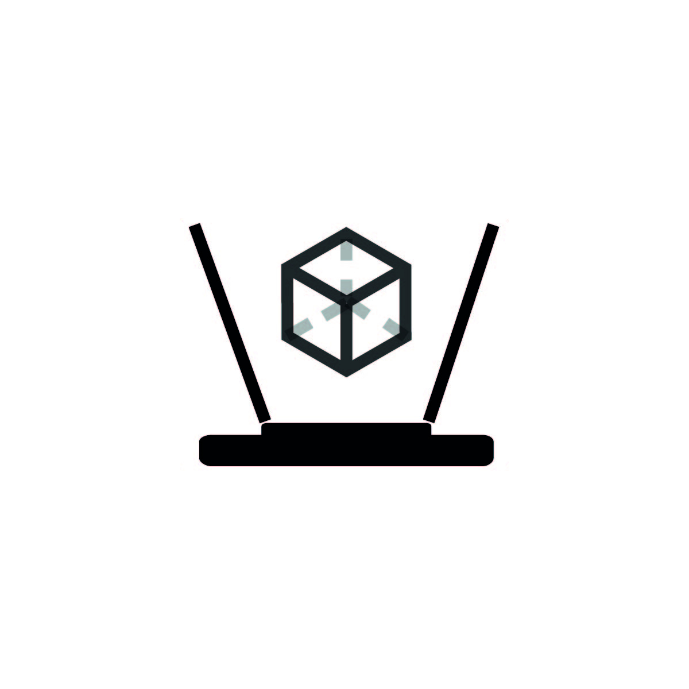

A Semana da Computação é um evento anual desenvolvido no Departamento de Ciência da Computação do Centro de Ciências Tecnológicas da Universidade do Estado de Santa Catarina. O principal objetivo da Semana da Computação é difundir conhecimentos estabelecendo uma integração entre professores, alunos e comunidade técnico-científica, por meio de palestras, minicursos e atividades culturais.
O tema para essa edição será "Os futuros da computação", e serão explorados os caminhos que a computação está tomando nas diferentes áreas em que atua.
 

 



Há anos a Semana da Computação vem acontecendo graças à ajuda de empresas entusiastas. A ajuda financeira é direcionada aos materiais de divulgação, Coffee Break's, brindes, entre outros. Traga o nome da sua empresa para essa sessão, ministre uma palestra durante a semana - entre em contato conosco.
Os sistemas de transporte urbano de passageiro mantêm um equilíbrio entre seus custos e suas receitas, determinadas pelos subsídios e vendas de passagens. A WPLEX Software fornece soluções completas para as empresas de ônibus, com sistemas de planejamento operacional, escala de tripulantes, monitoramento e informação ao passageiro. Nessa palestra serão apresentados alguns recursos dos softwares WPLEX, baseados em algoritmos de Pesquisa Operacional, e que trazem agilidade para as necessidades dos usuários.
Palestrante: Sylvain Fournier (WPLEX)
Esse minicurso será uma introdução ao Vue.js e ao desenvolvimento de UI Components. Vue.js é um framework JavaScript open-source para construir interfaces de usuário. Saiba mais sobre a ferramente nesse link.
ATENÇÃO! CONFIRMAÇÃO DE INSCRIÇÃO! Para ter sua inscrição confirmada, traga um litro de leite ou 1 Kg de alimento não perecível (exceto sal) para doação a entidades assistenciais. O recebimento será feito na secretaria do DCC (sala F206) até o dia 15 de setembro, sexta-feira.
Ministrante: Fernanda Sales Bittencourt de Lemos (Unimed)
Será compartilhado um panorama sobre a evolução da engenharia de software desde a década de 1950 até os dias de hoje, e o que está sendo lançado e pesquisado na área de desenvolvimento de software tanto no mundo quanto aqui em Joinville.
Palestrante: Anderson Borges (CTO da ContaAzul)
Usando Springboot e Java 8, serão apresentadas e desenvolvidas algumas aplicações que se comunicam com o Google, Facebook e Github através de OAuth e APIs RESTfull para demonstrar o poder dos microserviços, que vem ganhando espaço no mundo de aplicações web.
Ministrantes: Victor Silveira Bogo, Rafael Otero Reinert e Roberto Duessmann (ContaAzul)
 
